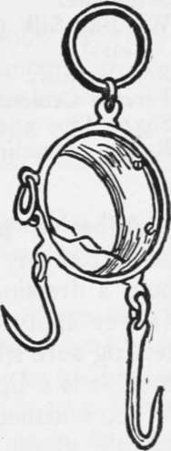

Other Tools Reqired In Camping
Description
This section is from the book "Camping And Woodcraft", by Horace Kephart. Also available from Amazon: Camping and Woodcraft.
Other Tools Reqired In Camping
A small spade, or an army entrenching tool, is a handy implement about camp. One outfitter has produced a good thing in this line which he calls a trekking spade. The handle is detachable. In shoveling hot coals at the fire-place, work quickly, so as not to draw the temper of the steel.
A useful tool, when it can be carried, is one I found recently in the catalogue of a certain mailorder house: a nail-cutting compass saw (just like any compass saw except that it is tempered for nails, sheet metal, etc., as well as wood), with 12-inch blade and weighing only 5 ounces. It can be used, too, in butchering big game, saving your axe edge. A folding saw, sold by sporting-goods dealers, will do well enough in most outfits.
If you want to weigh the game you kill, carry what is called a Little Giant scale (Fig. 69). Although of pocket size and 12-oz. weight, it weighs by the small hook up to 40 lbs. by 2 lbs., and by the larger one up to 350 lbs. by 5 lbs. For fish, of course, a small spring balance is the thing.
A pair of side-cutting pliers, of the very best steel, is almost a necessity. I always carry a small one when fishing, to snip off the barb of A *Giant Scale"* an imbedded hook, which otherwise is a mighty mean thing to get rid of. The pliers are in daily use for other purposes.
A 6 to 8-inch mill file, and a carborundum stone, will keep the axe and other cutlerv in order. (A mill file is cut diagonally and parallel, instead of criss-cross like a common flat file. X.
Folding Saw. Mill File. Triangular File. Side-cutting Pliers. Carborundum Stone. Scales.
Gun Screw-driver. Reel Screw-driver. Small Hand Drill. Tape Line.
Copper Wire (two sizes). Nails, Brads, Tacks, Screws. 1/2 gill Le Page's Glue. Marine Glue. Solderene.
Winding Silk (or Dental Floss). Rod Varnish. Ferrule Cement. Spare Tips and Guides. Rubber Mending Tissue.
Gun or Rifle Cleaning Rod and Brush. Gun Oil. Gun Wipers. Sandpaper. Emery Cloth. Shears. Needles. Thread. Wax.
Spare Buttons. Safety Pins. Horse-blanket Pins. Rubber Bands (large). Spare Shoe Laces. Lock-stitch Awl. Shoe Nails. Hob-nails. Sail Needles.
Twine (in tobacco bag). Split Rivets.
10 yds. 2-inch Adhesive Plaster.
Adhesive plaster (zinc oxide plaster) can be bought at any drug store. Besides its regular use to hold a dressing in place where bandaging is difficult (never apply it directly to a wound), and for protecting sore spots, such as a cut finger or a blistered foot, it is a lightning repairer for all sorts of things. When warmed it will stick to any dry surface, wood, metal, glass, cloth, leather, or skin. It can be peeled off and reapplied several times. As an instantaneous mender of rents and stopper of holes or cracks it has no equal. It is waterproof and airtight. With a broad strip you can seal a box or chest watertight, stop a leak in a canoe (" iron " it on writh a hot spoon or stone) or mend a paddle, a gunstock, or even an axe-handle (first nailing it). A chest or cupboard can be extemporized from any packing box, in a jiffy, by cleating the top and using surgeon's plaster for hinges.
Select from the following list such articles as you know you will need, and make a light wooden box in which they will stow properly.
One of the most bothersome things in shifting camp is to secure opened cans and bottles from spilling. Surgeon's plaster does the trick in a twinkling. Put a little square of it over each hole in the milk can that you opened for breakfast, and there will be no leakage. To hold a cork in a bottle, stick a narrow strip of the plaster over the cork and down opposite sides of the bottle's neck. To protect the bottle from breaking, run a strip around it at top and one at bottom. The caps of baking powder cans or similar tins can be secured to the bodies in the same way.
If your fishing rod sticks at the ferrules, wrap a bit of the plaster around each joint to give you a grip, then pull without twisting.
Rubber mending tissue (any dry-goods store) is good to patch a tent, a canoe, or rubber articles (waders, etc.). Cut canvas patch and tissue ol same size, place the latter over rent and the patch on top, then press with a hot iron or rub with a hot, smooth stone.
Dental floss is fine for quick rod repairing, or to use as an emergency leader. It is very strong, ready waxed, waterproof, and durable.
The list of tools and supplies given above is, of course, only suggestive, and for trips where the going is fairly easy. To each according to his needs.
When traveling with horses, take along a hammer, a few spare horseshoes and their nails, leather mending kit, and the necessary ropes.
Lantern
Kerosene is a nuisance in carriage; if so much as a drop escapes anywhere near your provisions, it will taint them. Carbide is easy to carry, and, aside from its regular use in an acetylene lantern, makes it easy to start a fire when everything is wet. A folding pocket lantern of Stonebridge or Alpina type, for candles, is best for men in light marching order; but let it be of tin or brass; those made of aluminum are much too frail.
Horn
When Camping in a canebrake country-have a huntsman's horn in the outfit. Leave it with the camp-keeper, who will blow it every evening about an hour before supper. The sound of a horn carries far, and its message is unmistakable. It is a dulcet note to one who is bewildered in a thick wood or brake.
Sundries
A length of small rope, such as braided sash cord, and a ball of strong twine, spare cloth and leather for mending, a few rawhide thongs, and some broad rubber bands, are likely to be needed.
A few yards of mosquito netting should be taken along to protect meat from blow-flies, and for various other purposes.
Cooking Kit
In rough country, especially if camp is to be shifted frequently, a stove is out of the reckoning. If pack animals are taken, or the trip is by canoe, without long and difficult portages, it pays to take along either a folding grate or a pair of fire irons (see Chapter IV).
Continue to: